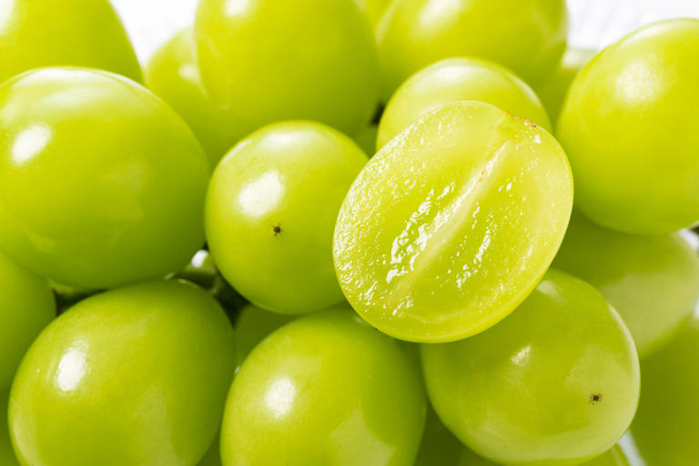

🥗 Vegetables and 🍊 Fruits

I liked grapes. I am attracted to the vibrant green color.
And the crisp and sweetness too. This one is called "muscat" grapes.
There are so many variety of grapes available.
Do you know your grapes?
Orange is my favourite color. And I love oranges too. Oranges are full of vitamin C,
and vitamin C keeps us healthy.


Colorful vegetables: Purple brinjals (eggplant). Yellow capsicums. Red cherry tomatoes.
Green broccoli. These vegetables help to build up our immunity, to fight viruses and diseases.
How did I do this?
I have also used emoji in my website. Look the at title above. Small little colorful images are called emoji 😊. Use Google Search to look for emoji, and you will see many websites that list the emoji that are supported in the computer. These resources are free to use. You can copy and paste any of those into your webpages. They are cute and funny to look at.